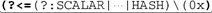

6.6. Techniques for Faster Expressions
The previous pages list the kinds of optimizations that I've seen implemented in Traditional NFA engines. No one program has them all, and whichever ones your favorite program happens to have now, they're certain to change sometime in the future. But, just understanding the kinds of optimizations that can be done gives you an edge in writing more efficient expressions. Combined with the understanding of how a Traditional NFA engine works, this knowledge can be applied in three powerful ways:
Write to the optimizations. Compose expressions such that known optimizations (or ones that might be added in the future) can kick in. For example, using  xx* xx* instead of x+ can allow a variety of optimizations to more readily kick in, such as the check of a required character or string (☞245), or initial-character discrimination (☞247). instead of x+ can allow a variety of optimizations to more readily kick in, such as the check of a required character or string (☞245), or initial-character discrimination (☞247). Mimic the optimizations. There are situations where you know your program doesn't have a particular optimization, but by mimicking the optimization yourself, you can potentially see a huge savings. As an example that we'll expand on soon, consider adding (?=t) to the start of this|that, to somewhat mimic the initial-character discrimination (☞247) in systems that don't already determine from the regex that any match must begin with 't'. Lead the engine to a match. Use your knowledge of how a Traditional NFA engine works to lead the engine to a match more quickly. Consider the this|that example. Each alternative begins with th; if the first's alternative can't match its th, the second alternative's th certainly can't match, so the attempt to do so is wasted. To avert that, you can use th(?:is|at) instead. That way, the th is tested only once, and the relatively expensive alternation is avoided until it's actually needed. And as a bonus, the leading raw-text th of th(?:is|at) is exposed, potentially allowing a number of other optimizations to kick in.
It's important to realize that efficiency and optimizations can sometimes be touchy. There are a number of issues to keep in mind as you read through the rest of this section:
Making a change that would seem to be certainly helpful can, in some situations, slow things down because you've just untweaked some other optimization that you didn't know was being applied. If you add something to mimic an optimization that you know doesn't exist, it may well turn out that the work required to process what you added actually takes more time than it saves. If you add something to mimic an optimization that you know doesn't currently exist, it may defeat or duplicate the real optimization if it's later added when the tool is upgraded. Along the same lines, contorting an expression to try to pique one kind of optimization today may prohibit some future, more advantageous optimization from kicking in when the tool is upgraded. Contorting an expression for the sake of efficiency may make the expression more difficult to understand and maintain. The magnitude of the benefit (or harm) a particular change can have is almost certainly strongly dependent on the data it's applied to. A change that is beneficial with one set of data may actually be harmful with another type of data.
Let me give a somewhat crazy example: you find (000|999)$ in a Perl script, and decide to turn those capturing parentheses into non-capturing parentheses. This should make things a bit faster, you think, since the overhead of capturing can now be eliminated. But surprise, this small and seemingly beneficial change can slow this regex down by several orders of magnitude (thousands and thousands of times slower). What!? It turns out that a number of factors come together just right in this example to cause the end of string/line anchor optimization (☞246) to be turned off when non-capturing parentheses are used. I don't want to dissuade you from using non-capturing parentheses with Perltheir use is beneficial in the vast majority of casesbut in this particular case, it's a disaster.
So, testing and benchmarking with the kind of data you expect to use in practice can help tell you how beneficial or harmful any change will be, but you've still got to weigh all the issues for yourself. That being said, I'll touch on some techniques that can be used toward squeezing out the last bit of efficiency out of an engine.
6.6.1. Common Sense Techniques
Some of the most beneficial things you can do require only common sense.
6.6.1.1. Avoid recompiling
Compile or define the regular expression as few times as possible. With object-oriented handling (☞95), you have the explicit control to do this. If, for example, you want to apply a regex in a loop, create the regex object outside of the loop, then use it repeatedly inside the loop.
With a procedural approach, as with GNU Emacs and Tcl, try to keep the number of regular expressions used within a loop below the cached threshold of the tool (☞244).
With an integrated approach like Perl, try not to use variable interpolation within a regex inside a loop, because at a minimum, it causes the regex value to be reevaluated at each iteration, even if you know the value never changes. (Perl does, however, provide efficient ways around the problem ☞348.)
6.6.1.2. Use non-capturing parentheses
If you don't use the capturing aspect of capturing parentheses, use non-capturing (?:⋯) parentheses (☞45). Besides the direct savings of not having to capture, there can be residual savings because it can make the state needed for backtracking less complex, and hence faster. It can also open up additional optimizations, such as needless-parentheses elimination (☞248).
6.6.1.3. Don't add superfluous parentheses
Use parentheses as you need them, but adding them otherwise can prohibit optimizations from kicking in. Unless you need to know the last character matched by .*, don't use (.)*. This may seem obvious, but after all, this is the "common sense techniques" section.
6.6.1.4. Don't use superfluous character classes
This may seem to be overly obvious as well, but I've often seen expressions like ^.*[:] from novice programmers. I'm not sure why one would ever use a class with a single character in itit incurs the processing overhead of a class without gaining any multi-character matching benefits of a class. I suppose that when the character is a metacharacter, such as [.] and [*], it's probably because the author didn't know about escaping, as with \. and \*. I see this most often with whitespace in a free-spacing mode (☞111).
Somewhat related, users of Perl that read the first edition of this book may sometimes write something like ^[Ff][Rr][Oo][Mm]: instead of a case-insensitive use of ^from:. Old versions of Perl were very inefficient with their case-insensitive matching, so I recommended the use of classes like this in some cases. That recommendation has been lifted, as the case-insensitive inefficiency has been fixed for some years now.
6.6.1.5. Use leading anchors
Except in the most rare cases, any regex that begins with .* should probably have ^ or \A (☞129) added to the front. If such a regex can't match when applied at the beginning of the string, it won't be able to match any better when the bump-along applies it starting at the second character, third character, and so on. Adding the anchor (either explicitly, or auto-added via an optimization
☞246) allows the common start-of-line anchor optimization to kick in, saving a lot of wasted effort.
6.6.2. Expose Literal Text
Many of the native optimizations we've seen in this chapter hinge on the regex engine's ability to recognize that there is some span of literal text that must be part of any successful match. Some engines are better at figuring this out than others, so here are some hand-optimization techniques that help "expose" literal text, increasing the chances that an engine can recognize more of it, allowing the various literal-text optimizations to kick in.
6.6.2.1. "Factor out" required components from quantifiers
Using xx* instead of x+ exposes 'x' as being required. The same logic applies to the rewriting of -{5,7} as ------{0,2}.
6.6.2.2. "Factor out" required components from the front of alternation
Using th(?:is|at) rather than (?:this|that) exposes that th is required. You can also "factor out"
on the right side, when the common text follows the differing text: (?:optim|standard)ization. As the next section describes, these can be particularly important when what is being factored out includes an anchor.
6.6.3. Expose Anchors
Some of the most fruitful internal regex optimizations are those that take advantage of anchors (like ^, $, and \G) that tie the expression to one end of the target string or another. Some engines are not as good as others at understanding when such an optimization can take place, but there are techniques you can use to help.
6.6.3.1. Expose ^ and \G at the front of expressions
^(?:abc|123) and ^abc|^123 are logically the same expression, but many more regex engines can apply the Start of string/line anchor optimization (☞246) with the first than the second. So, choosing to write it the first way can make it much more efficient. PCRE (and tools that use it) is efficient with either, but most other NFA tools are much more efficient with the exposed version.
Another difference can be seen by comparing (^abc) and ^(abc). The former doesn't have many redeeming qualities, as it both "hides" the anchor, and causes the capturing parentheses to be entered before the anchor is even checked, which can be inefficient with some systems. Some systems (PCRE, Perl, the .NET languages) are efficient with either, but others (Ruby and Sun's Java regex library) recognize the optimization only with the exposed version.
Python doesn't seem to have the anchor optimization, so these techniques don't currently matter for it. Of course, most optimizations in this chapter don't apply to Tcl (☞243).
6.6.3.2. Expose $ at the end of expressions
This is conceptually very similar to the previous section, where abc$|123$ and (?:abc|123)$ are logically the same expression, but can be treated differently by the optimizers. Currently, there is a difference only for Perl, as only Perl currently has the End of string/line anchor optimization (☞246). The optimization kicks in with (⋯|⋯)$ but not with (⋯$|⋯$).
6.6.4. Lazy Versus Greedy: Be Specific
Usually, the choice between lazy and greedy quantifiers is dictated by the specific needs of the regex. For example, ^.*: differs substantially from ^.*?: in that the former one matches until the final colon, while the latter one matches until the first. But, suppose that you knew that your target data had exactly one colon on it. If that's the case, the semantics of both are the same ("match until the colon"), so it's probably smart to pick the one that will run fastest.
It's not always obvious which is best, but as a rule of thumb when the target strings are long, if you expect the colon to generally be near the start of the string, using the lazy quantifier
allows the engine to find the colon sooner. Use the greedy quantifier if you expect the colon to be toward the end of the string. If the data is random, and you have no idea which will be more likely, use a greedy quantifier, as they are generally optimized a bit better than non-greedy quantifier, especially when what follows in the regex disallows the character following lazy quantifier optimization
(☞248).
When the strings to be tested are short, it becomes even less clear. When it comes down to it, either way is pretty fast, but if you need every last bit of speed, benchmark against representative data.
A somewhat related issue is in situations where either a lazy quantifier or a negated class can be used (such as ^.*?: versus ^[^:]*:), which should be used? Again, this is dependent on the data and the language, but with most engines, using a negated class is much more efficient than a lazy quantifier. Perl is an exception, because it has that character following lazy quantifier optimization.
6.6.5. Split Into Multiple Regular Expressions
There are cases where it's much faster to apply many small regular expressions instead of one large one. For a somewhat contrived example, if you wanted to check a large string to see if it had any of the month names, it would probably be much faster to use separate checks of January, February, March, etc., than to use one January|February|March|⋯. With the latter, there's no literal text known to be required for any match, so an embedded literal string check optimization (☞247) is not possible. With the all-in-one regex, the mechanics of testing each subexpression at each point in the text can be quite slow.
Here's an interesting situation I ran into at about the same time that I was writing this section. When working with a Perl data-handling module, I realized that I had a bug with my client program that caused it to sent bogus data that looked like 'HASH(0x80f60ac)'
instead of the actual data. So, I thought I'd augment the module to look for that kind of bogus data and report an error. The straightforward regex for what I wanted is \b(?:SCALAR|ARRAY|⋯|HASH)\(0x[0-9a-fA-F]+\).
This was a situation where efficiency was extremely important. Would this be fast? Perl has a debugging mode that can tell you about some of the optimizations it uses with any particular regex (☞361), so I checked. I hoped to find that the pre-check of required string optimization (☞245) would kick in, since an advanced enough engine should be able to figure out that '(0x' is required in any match. Knowing the data that I'd apply this to would almost never have '(0x', I knew that such a pre-check would eliminate virtually every line. Unfortunately, Perl didn't pick this out, so I was left with a regex that would entail a lot of alternation at every character of every target string. That's slower than I wanted.
Since I was in the middle of researching and writing about optimizations, I thought hard about how I could rewrite the regex to garner some of the better optimizations. One thought I had was to rewrite it along the form of the somewhat complex \(0x[0-9a-fA-F]+\). The approach here is that once \(0x has matched, the positive lookbehind (underlined for clarity) makes sure that what came before is allowed, and then checks that what comes after is expected as well. The whole reason to go through these regex gymnastics is to get the regex to lead with non-optional literal text \(0x, which allows a lot of good optimizations to kick in. In particular, I'd expect that pre-check of required string optimization to kick in, as well as the initial character/substring discrimination optimization (☞247). I'm sure that these would have made it very fast, but Perl doesn't allow variable-length lookbehind (☞133), so I was back to square one.
However, I realized that since Perl wasn't doing the pre-check for \(0x for me, I could just do it myself:
if ($data =~ m/\(0x/
and
$data =~ m/(?:SCALAR|ARRAY|⋯|HASH)\(0x[0-9a-fA-F]+\)/)
{
# warn about bogus data⋯
}
The check of \(0x eliminates virtually every line, so this leaves the check of the relatively slow full regex for only when the likelihood of a match is high. This created a wonderful balance of efficiency (very high) and readability (very high).
6.6.6. Mimic Initial-Character Discrimination
If the initial-character discrimination optimization (☞247) is not done by your implementation, you can mimic
it yourself by adding appropriate lookahead (☞133) to the start of the regex. The lookahead can "pre-check" that you're at an appropriate starting character before you let the rest of the regex match.
For example, for Jan|Feb|⋯|Dec, use (?=[JFMASOND])(?:Jan|Feb|⋯|Dec). The leading [JFMASOND] represents letters that can begin the month names in English. This must be done with care, though, because the added overhead of the lookahead may overshadow the savings. In this particular example, where the lookahead is pre-checking for many alternatives that are likely to fail, it is beneficial for most systems I've tested (Java, Perl, Python, Ruby, .NET languages), none of which apparently are able to derive [JFMASOND] from Jan|Feb|⋯|Dec themselves.
PHP/PCRE does not apply this optimization by default, but it can with the use of PCRE's pcre_study
(in PHP, the S
pattern modifier ☞478). Tcl, of course, can do it perfectly (☞243).
A behind-the-scenes check of [JFMASOND] by an engine's native optimization is certainly faster than the same check explicitly added by us to the regex proper. Is there a way we can modify the regex so that the engine will check natively? Well, with many systems, you can by using the horribly contorted:
[JFMASOND](?:(?<=J)an|(?<=F)eb|⋯|(?<=D)ec)
I don't expect you to be able to understand that regex at first sight, but taking the time to understand what it does, and how, is a good exercise. The simple class leading the expression can be picked up by most systems' initial-character discrimination optimization, thereby allowing the transmission itself to effectively pre-check [JFMASOND]. If the target string has few matching characters, the result can be substantially faster than the Jan|⋯|Dec original, or our prepended-lookahead. But, if the target string has many first-character matches, the extra overhead of all the added lookbehind can actually make things slower. On top of this worry, it's certainly a much less readable regular expression. But, the exercise is interesting and instructive nevertheless.
6.6.6.1. Don't do this with Tcl
The previous example shows how hand tweaking has the potential to really make things worse. The sidebar on page 243 notes that regular expressions in Tcl are mostly immune to the form of the expression, so for the most part attempts to hand optimize are meaningless. Well, here's an example where it does matter. Adding the explicit (?=[JFMASOND]) pre-check causes Tcl to slow down by a factor of about 100x in my tests.
6.6.6.2. Don't do this with PHP
As mentioned earlier, this shouldn't be done in PHP because you can enable the optimization with PHP's "study" option, the S pattern modifier. Details are in Chapter 10, starting on page 478.
6.6.7. Use Atomic Grouping and Possessive Quantifiers
There are many cases when atomic grouping (☞139) and possessive quantifiers (☞142) can greatly increase the match speed, even though they don't change the kind of matches that are possible. For example, if ^[^:]+: can't match the first time the colon is attempted, it certainly can't match after backtracking back into the [^:]+, since any character "given up" by that backtracking, by definition, can't match a colon. The use of atomic grouping ^(?>[^:]+): or a possessive quantifier ^[^:]++: causes the states from the plus to be thrown away, or not created in the first place. Since this leaves nothing for the engine to backtrack to, it ensures that it doesn't backtrack unfruitfully. (The sidebar on page 251 suggests that this can be done automatically by a smart enough engine.)
However, I must stress that misusing either of these constructs can inadvertently change what kind of matches are allowed, so great care must be taken. For example, using them with ^.*:, as with ^(?>.*):, guarantees failure. The entire line is matched by .*, and this includes any colon that the later : needs. The atomic grouping removes the ability for the backtracking required to let : match, so failure is guaranteed.
6.6.8. Lead the Engine to a Match
One concept that goes a long way toward more efficient NFA regular expressions is pushing "control" issues as far back in the matching process as possible. One example we've seen already is the use of th(?:is|at) instead of this|that. With the latter, the alternation is a top-level control issue, but with the former, the relatively expensive alternation is not considered until th has been matched.
The next section, "Unrolling the Loop," is an advanced form of this, but there are a few simple techniques I can mention here.
6.6.8.1. Put the most likely alternative first
Throughout the book, we've seen a number of situations where the order in which alternatives are presented matters greatly (☞28, 176, 189, 216). In such situations, the correctness of the match take precedence over optimization, but otherwise, if the order doesn't matter to the correctness, you can gain some efficiency by placing the most-likely alternatives first.
For example, when building a regex to match a hostname
(☞205) and listing the final domain parts, some might find it appealing to list them in alphabetical order, as with (?:aero|biz|com|coop|⋯). However, some of those early in the list are new and not currently popular, so why waste the time to check for them first when you know they will likely fail most of the time? An arrangement with the more popular first, such as (?:com|edu|org|net|⋯), is likely to lead to a match more quickly, more often.
Of course, this matters only for a Traditional NFA engine, and then, only for when there is a match. With a POSIX NFA, or with a failure, all alternatives must be checked and so the ordering doesn't matter.
6.6.8.2. Distribute into the end of alternation
Continuing with a convenient example, compare (?:com|edu|⋯|[a-z][a-z])\b with com\b|edu\b|⋯\b|[a-z][a-z]\b. In the latter, the \b after the alternation has been distributed onto the end of each alternative. The possible benefit is that it may allow an alternative that matches, but whose match would have been undone by the \b after the alternation, to fail a bit quicker, inside the alternation. This allows the failure to be recognized before the overhead of exiting the alternation is needed.
This is perhaps not the best example to show the value of this technique, since it shows promise only for the specific situation when an alternative is likely to match, but what comes right after is likely to fail. We'll see a better example of this concept later in this chapterlook for the discussion of $OTHER* on page 280.
This optimization can be dangerous. One very important concern in applying this hand optimization is that you take care not to defeat more profitable native optimizations. For example, if the "distributed" subexpression is literal text, as with the distribution of the colon from (?:this|that):) to this:|that:, you're directly conflicting with some of the ideas in the "Expose Literal Text" section (☞255). All things being equal, I think that those optimizations would be much more fruitful, so be careful not to defeat them in favor of this one.
A similar warning applies to distributing a regex-ending $ on systems that benefit from an exposed end-anchor (☞256). On such systems, (?:com|edu|⋯)$ is much faster than the distributed com$|edu$|⋯$. (Among the many systems I tested, only Perl currently supports this.)
|
 ]
]